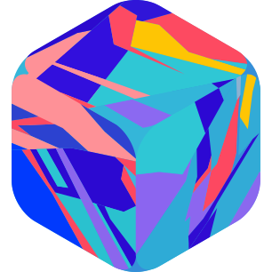

Rebase
Point it at Postgres.
Get a backend.
The open-source Backend-as-a-Service for Postgres.
Own your data, own your code.
REST
Typed SDK
Auth
Storage
Realtime
Backups
RLS
$
pnpm dlx @rebasepro/cli init
rebase.pro
